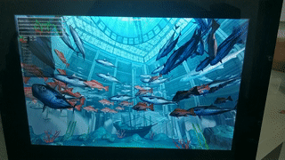
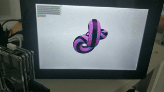

One way to easily test WPE is to use Yocto images for Raspberry Pi devices, write them in a micro-SD card and use them to boot the device.
Getting and flashing the image on a micro-SD card
Use the following values:
- MACHINE: one of {raspberrypi3-mesa|raspberrypi4-64-mesa}
- raspberrypi3-mesa is 32-bit, to be able to test WPE in a more resource-starved environment
- raspberrypi4-64-mesa is 64-bit
- SDIMG: based on the machine, ‘
core-image-weston-browsers-${MACHINE}.wic’, e.g. ‘core-image-weston-browsers-raspberrypi3-mesa.wic’ - SDCARD_DEV: whatever the device in your system, e.g. ‘
/dev/mmcblk0_REMOVE_THIS’- note that PREVIOUS DATA WILL BE ERASED, be specially careful to not overwrite the wrong disk/card
The version of WPE in these images is 2.38.x.
Getting the image
Generically, using the substitutions mentioned previously:
wget https://wk-contrib.igalia.com/yocto/meta-webkit/browsers/stable/images/"${MACHINE}"/"${SDIMG}".{bz2,bmap}
Writing using ‘bmaptool’ (faster, recommended) or classic ‘dd’
Homepage for bmaptool: https://github.com/intel/bmap-tools
You can typically get this in GNU/Linux-based distributions installing ‘bmap-tools’ package if available.
Combined instructions for Raspberry Pi 3B/3B+ (32-bit) and Raspberry Pi 4 (64-bit)
Choose one of:
MACHINE=raspberrypi3-mesa
or:
MACHINE=raspberrypi4-64-mesa
Then to download the image:
SDIMG="core-image-weston-browsers-${MACHINE}.wic"
SDCARD_DEV=/dev/mmcblk0_REMOVE_THIS
wget https://wk-contrib.igalia.com/yocto/meta-webkit/browsers/stable/images/${MACHINE}/${SDIMG}.{bz2,bmap}
To write with ‘bmaptool’:
sudo bmaptool copy "${SDIMG}".bz2 "${SDCARD_DEV}"
To write with ‘dd’:
bzip2 -dc "${SDIMG}".bz2 | sudo dd of="${SDCARD_DEV}" bs=4k status=progress
Set-up
After writing the micro-SD card and using it to boot the device, it should boot to a graphical environment, using Weston (from Wayland), with a minimal top panel bar and some icons within it.
To test WPE networking is needed, either by pluggin-in an ethernet cable (with DHCP networking should set-up automatically), or by clicking the “wireless” icon in the panel, that brings up a basic script to help to set the network up (selecting SSID and password).
Testing and demos
After having the network working, the browser (cog) can be launched
from one of the icons in the panel, or alternatively by opening a
terminal with another of the icons and launching it from the command
line.
This is a quick list of environment variables and key bindings that
can be used with cog to perform certain actions or change its
behaviour (e.g. toggle fullscreen, reload, exit):
Example:
COG_PLATFORM_WL_VIEW_FULLSCREEN=1 cog -P wl "https://www.wikipedia.org/"
Demos
This is a short list of suggested demos that can be used to check WPE in action on the device and its performance.
| Name | Animation |
|---|---|
| CSS transformation and animations in WebKit poster circle example |  |
| Playing an embedded video from wpewebkit.org |  |
| Playing BouncyBalls |  |
| Rendering WebGL Aquarium demo |  |
| Rendering WebGL Abstract Shapes |  |